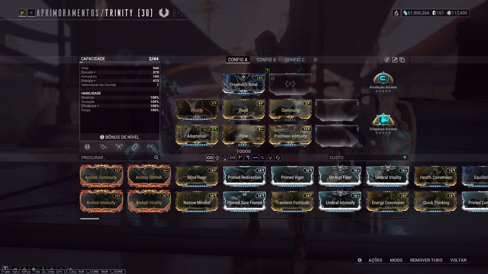
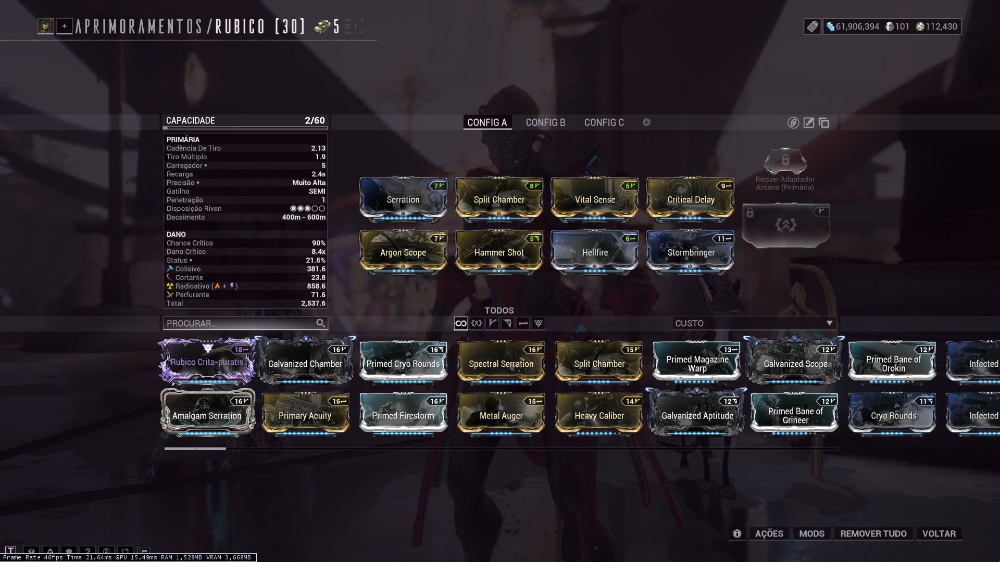
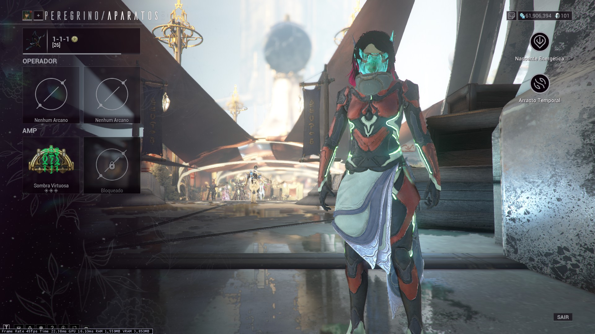
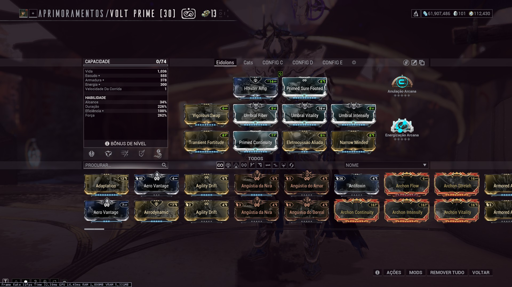
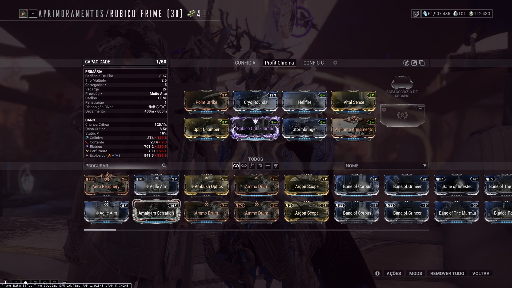

Demonstrações
Vídeos de caçadas para referências.
Modo Iniciante
• Warframe: Trinity (Anulação Arcana MAX, Vingança Arcana R0)
• Primária: Rubico
• Secundária: Akarius Prime
• Arma-Branca: Sarpa
• Foco: Zenurik
• Amp: Sirocco (Sombra Virtuosa MAX)


Modo Iniciante - Melhorado
• Warframe: Trinity (Anulação Arcana MAX, Vingança Arcana MAX)
• Primária: Rubico
• Secundária: Akarius Prime
• Arma-Branca: Sarpa
• Foco: Zenurik
• Amp: 1-1-1 (Sombra Virtuosa MAX) (Prisma Raplak, Ligação Pencha, Amarra Clapkra)



Setup Avançado
• Warframe: Volt Prime (Anulação Arcana MAX, Energização Arcana MAX)
• Primária: Rubico Prime
• Secundária: Vermisplicer (Kitgun)
• Arma-Branca: Vastilok
• Foco: Madurai
• Amp: 5-4-7 (Carapaça e Revigoração do Mago MAX; Erradicação e Massacre Perpétuos MAX) (Prisma Cantic, Ligação Phahd, Amarra Certus)

